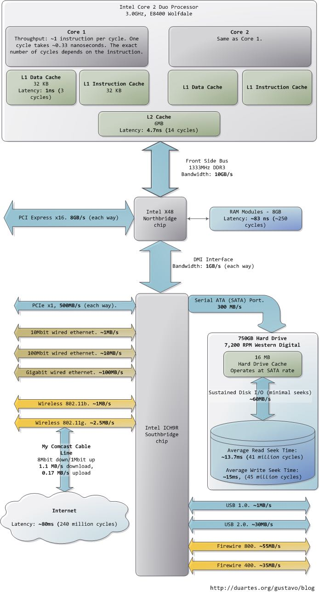

What Your Computer Does While You Wait
http://duartes.org/gustavo/blog/post/what-your-computer-does-while-you-wait
作者大致介绍了一下目前计算机组成部分的性能指标以及大致优化思路

| 指标 | 数据 |
|---|---|
| CPU主频 | 3.0GHz |
| 指令周期 | 1 insn/cycle |
| 时间周期 | 0.33ns/cycle |
| L1数据缓存 | 32KB |
| L1指令缓存 | 32KB |
| L1存取延迟 | 3cycles(1ns) |
| L2缓存 | 6MB |
| L2存取延迟 | 14cycles(4.7ns) |
| 分支预测失败 | 5ns |
| 锁操作开销 | 25ns |
| 内存延迟 | 250cycles(83ns) |
| 内存带宽 | 10GB/s |
| 内存顺序读取1MB | 0.25ms |
| Snappy压缩1M数据 | 3ms |
| SATA(Serial ATA)端口带宽 | 300MB/s |
| 磁盘转速 | 7200RPM |
| 磁盘读寻道延迟 | 41Mcycles(13.7ms) |
| 磁盘写寻道延迟 | 45Mcycles(15ms) |
| 磁盘读写带宽 | 60MB/s |
| 磁盘顺序读取1MB | 20ms |
| 千兆网卡带宽 | 100MB/s |
| 同机房RTT | 0.5ms |
| gettimeofday系统调用 | 3000cycles(1us) |
| 单CPU软中断次数 | 10w/s |